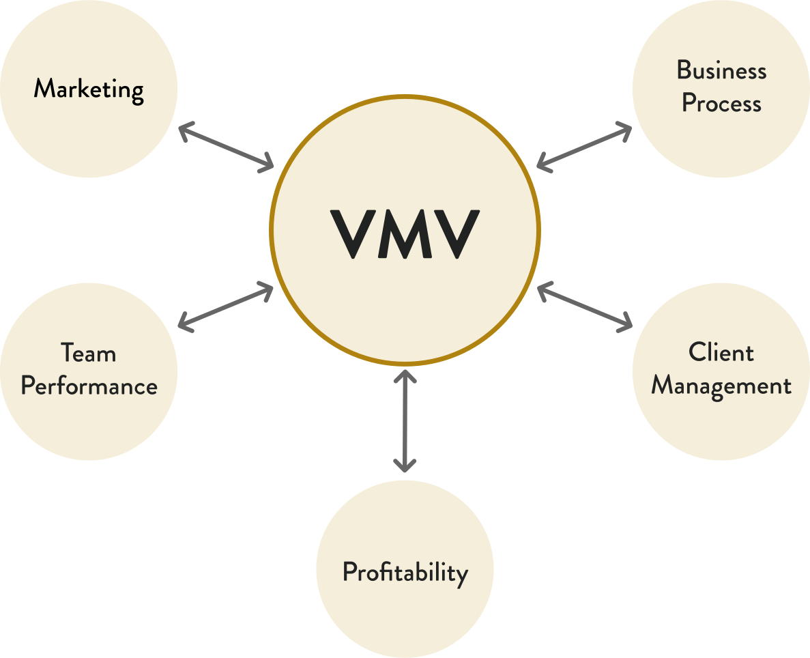

Vision | Mission | Values
Contents
Vision
Our vision is to be recognised as the go-to experts for premium quality email marketing servicesMission
Our mission is to help organisations send better email marketing. We support our clients in reaching their audience more effectively by sharing our core values of Trust, Expertise and Partnership, all underpinned by the goal of maximising Return on Investment.
Values
Trust
We build respect and trust within our team and with our clients
Expertise
We constantly develop our skills to make us the ‘go to’ company for email marketing
Partnership
We collaborate and thrive in working towards a shared goal
Trust
- Clients trust our with their data, their strategies and their exclusive business announcements; they also trust us to provide appropriate services to support this information and aspiration
We do what we say we are going to do, when we say we are going to do it
This reliability strengthens the bond of trust and gives longevity to the relationships
Expertise
- We are the Email Marketing Specialists and we demonstrate this expertise through our daily work but also our thought leadership blog articles and ebooks
By utilising the different skills of each member of the team, we demonstrate our confidence and experience
Our reporting suite reinforces our expertise and leads discussion for evolution
We are confident, but never arrogant, to advise the client, even if it goes against the grain of what they want to hear
Partnership
- We demonstrate a collaborative ethos with our clients. Understanding their pressures, needs, and preferences.
Take the time to build rapport with them be that on the phone, on social media or over dinner.
We share the common goal of success by asking the right questions: What business problem is being solved? What is the purpose of this campaign?
Return On Investment
- ROI underpins each of our Values to ensure we remain focussed on the needs of our clients
By monitoring ROI, we are transparent with our value to their business
We prove this ROI with our Reporting Suite; and we use this information to grow, adapt and evolve the email marketing programme
Performance Measures
The Performance Measures are a way to quantify our success as a business and to gauge the success of our daily activities. They are split into three:
PM1 |
Retained Contracts |
PM2 |
Ad Hoc Work |
PM3 |
Under Usage |
For more on the performance measures, see the Client Relationship Handbook.
The Vision, Mission & Values Map
How the Vision, Mission and Values looks in daily life:
Team Dynamic

How the Vision, Mission and Values looks in daily life:
Client Communications
- Phone Calls
- Video Calls
- Face to Face Meetings
- Social Media Interactions
The VMV influences our relationships with clients. We must live and breathe our VMV in everything we do - this demonstrates our integrity and professionalism.
For an in depth look at client relationships read the Client Relationship Handbook.
How the Vision, Mission and Values looks in daily life:
Reporting
- Our reporting suite demonstrates the performance of the email marketing programme and the value of Jarrang
It can be used to improve the email programme, demonstrating our shared desire for success
It is used a catalyst for further conversation, which helps to develop trust and rapport
It clearly demonstrates our expertise and ensures email marketing remains high on the agenda for discussion and investment
For more on reporting, you can find a list of articles on our wiki here.
How the Vision, Mission and Values looks in daily life:
Business Administration & Process
- Business Proposals
Contracts
Agendas
- Internal Documents
Handbooks & Processes
HR & Professional Development
How we demonstrate our Vision, Mission & Values in everyday life
- Clarify: If we’re transparent about how we work and how we can help people, this instills respect and trust.
Quantify: Give clients and potential new business solid reasons that we’re exceptional. For example, years of expertise, statistics, hard facts.
Collaborate: Make it known from the outset that we work in partnership with our clients. Our business is to understand theirs and to both have the same goal. We will listen, action, and advise.
HR & Professional Development
We weave our VMV throughout our recruitment and personnel development processes to ensure that we live the brand:
- We are the Email Marketing Specialists and we demonstrate this expertise through our daily work but also our thought leadership blog articles and ebooks
By utilising the different skills of each member of the team, we demonstrate our confidence and experience
We are confident, but never arrogant, to advise the client, even if it goes against the grain of what they want to hear
HR & Professional Development
We focus our energy on delivering individual objectives that fit together and contribute to team objectives, which in turn helps us to achieve our business goals this flows from the Appraisal process. These processes include:
- Clear Performance Measures for each role
Regular 121 reviews
Team briefings
Bonus programme to reward both individual and team performance
Belbin Profiling to maximise team performance
Belbin
The High Performing Team
The Belbin Test has become the gold-standard method for identifying behavioural contributions in a team. It’s done through a series of questions that determine what you deem as high or low priorities. We carry out the Belbin test for every new colleague to ensure we maintain the optimum dynamic for a high performing team.
It’s important to have a balance of each key Belbin role in order to have a high performing team.
Scroll down to discover more about Belbin roles 
The Plant
Objective: To act as a prime source of innovation and ideas for the team
Strengths: Tackle problems in new and interesting ways, provide original lines of thought
Weaknesses: Can become preoccupied with individual tasks and does not see the whole
The Monitor Evaluator
Objective: To analyse ideas and suggestions, and evaluate their feasibility
Strengths: Proficient at critical thinking, they are adept at weighing up the pros and cons of a situation and reaching decisions using logic
Weaknesses: Take their time deliberating over a decision and can be skeptical to new ideas
The Shaper
Objective: To challenge and drive the team forward to achieve its goals and objectives
Strengths: They exert a directive influence and can shape group discussion or activities into objectives and targets. They are good at intervening when a team is straying too far from its original brief.
Weaknesses: They tend to show a strong emotional response to disappointment or frustration
Other Belbin Roles
The Resource Investigator
Objective: Uses their inquisitive nature to find ideas to bring back to the team.
Strengths: Outgoing, enthusiastic. Explores opportunities and develops contacts.
Weaknesses: Might be over-optimistic, and can lose interest once the initial enthusiasm has passed.
The Teamworker
Objective: Helps the team to gel, using their versatility to identify the work required and complete it on behalf of the team.
Strengths: Co-operative, perceptive and diplomatic. Listens and averts friction.
Weaknesses: Can be indecisive in crunch situations and tends to avoid confrontation.
The Co-ordinator
Objective: Needed to focus on the team's objectives, draw out team members and delegate work appropriately.
Strengths: Mature, confident, identifies talent. Clarifies goals.
Weaknesses: Can be seen as manipulative and might offload their own share of the work.
The Specialist
Objective: Brings in-depth knowledge of a key area to the team.
Strengths: Single-minded, self-starting and dedicated. They provide specialist knowledge and skills.
Weaknesses: Tends to contribute on a narrow front and can dwell on the technicalities.
The Implementer
Objective: Needed to plan a workable strategy and carry it out as efficiently as possible.
Strengths: Practical, reliable, efficient. Turns ideas into actions and organises work that needs to be done.
Weaknesses: Can be a bit inflexible and slow to respond to new possibilities.
The Completer - Finisher
Objective: Most effectively used at the end of tasks to polish and scrutinise the work for errors, subjecting it to the highest standards of quality control.
Strengths: Painstaking, conscientious, anxious. Searches out errors. Polishes and perfects.
Weaknesses: Can be inclined to worry unduly, and reluctant to delegate.
To discover more about Belbin and to read some of their resources, go here
.How the Vision, Mission and Values looks in daily life:
Marketing
- Raise awareness of the brand for potential clients, as well as reinforcing what we do amongst our existing clients and peers
Share the team dynamic and culture at Jarrang - we live the Vision, Mission & Values
Shout about successes (e.g. case studies or awards)
Share knowledge and insights to support our mission of helping businesses send better email marketing
Social Media
We use different platforms to connect with different audiences at different times.
When it comes to Social Media:
- Brand Representation
- Human Side to Jarrang
- People and Culture
- Professional Engagement
- Thought Leadership
- Brand Representation
- Human Side to Jarrang
- People and Culture
- Professional Engagement
- Thought Leadership
Team and Culture
It displays the partnership of working together but also gives people an insight into being part of the Jarrang team.
Raise Brand Awareness
Our social media posts to raise awareness of our brand have a clear message and striking design that is aligned with our values.
Knowledge & Insights
By sharing our knowledge and skills it illustrates our genuine interest in wanting people to send better email marketing campaigns, which supports our Mission and demonstrates that we live by the Vision, Mission & Values.
Email Marketing
How we present ourselves to the market is an extremely important opportunity to display our values. Whether it’s bringing new products to market by utilising the press or participating in events to increase visibility, people see us a trusted and reliable source.
Our monthly Jarrang Journal, our regular email marketing newsletter, is a consistent way to showcase our expertise. We practice what we preach and this transparency earns us respect and trust.
Celebrating Success
- We should celebrate acquiring a new client, the happiness of an existing client, or completing a complex project - as long as it comes from a place of pride rather than arrogance.
By doing so, it imparts a sense of trust and confidence in our abilities
Summary
Our Vision, Mission and Values are at the core of everything we do at Jarrang:
- It’s woven into our team dynamic so we can work together in an optimum way
It’s carried through to how we interact with clients and how we run our business
It influences how we project ourselves through our own marketing
This gives the experience of working at, and with, Jarrang a sense of structure and confidence
Knowing and understanding the businesses Core Values can only lead to success
© Jarrang Limited 2020